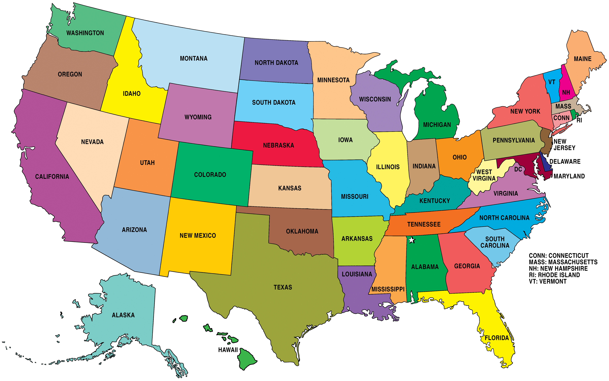

Source:sweetclipart.com
Image credit: Sweet Clip Art. http://sweetclipart.com/index.php?q=stethoscope-listening-heart-beat-159
HelloNatalie wants to be a doctor when she grows up. Natalie has wanted to be a doctor since she was little, but in the past five years has become very interested in medical nonprofit organizations. When Natalie was sixteen she went on her first medical mission trip to Haiti. She worked with doctors and nurses from places all over the world like France, Chili, Australia, etc. Natalie loved the idea of all of these people coming together to travel to third world countries to provide medical care and surgeries like pediatric heart surgery. She sat in on meetings with the Haitian government about opening a new university hospital in Haiti with the help of nonprofit organizations such as the one she was traveling with. It was then that Natalie realized how much work goes into such an organization and the business knowledge required to run nonprofit organizations like these.
When Natalie realized how important business was in the real world, she decided to be a finance major. But, without letting go of her childhood dream, Natalie still takes all of her pre medical classes. She decided to set her schedule up this way because she did not want to take the humanity and language classes required to graduate out of the Franklin Arts and Sciences College. Actually, the only difference standing between her four year class plan and that of a biology major, is that the biology major only has one more science class required. However, since the biology major is in the Franklin College it also has many humanity requirements of a typical liberal arts education. Instead, Natalie takes business classes out of the Terry College along with her pre medical science classes. Natalie is in her third semester at the University of Georgia and is currently sticking to her four year plan she made at the beginning of her freshman year. Natalie is set to graduate on time and will hopefully attend medical school after she graduates.
Natalie's class schedule for this semester is listed below.
| Class Schedule | |
|---|---|
| CSCI 1101 | CHEM 2211 |
| BIOL 1107 | GEOG 1101 |
Natalie likes to watch Grey's Anatomy on Netflix. Grey’s Anatomy was created by Shonda Rhimes and premiered on American Broadcasting Company (ABC). Although the new episodes still air on ABC, Netflix has all of the old seasons that Natalie likes to watch when she is bored. The main character, Meredith Grey, is played by Ellen Pompeo. Meredith begins the show as a first year surgical intern, and she show follows her through her journey to becoming a surgeon. The show began in 2005 and is currently in the middle of its fourteenth. This current season will be the final season of the show. Be warned, the show is full of heartbreaking episodes; Shonda Rhimes is not afraid to kill of extremely well liked characters. Grey’s Anatomy is also full of love triangles, tangled family secrets, and shocking twists. Natalie highly recommends this show for anyone who likes dramas. Although the show is based on a surgical hospital, do not be intimidated by the surgery and bloody scenes.
Click on the link below to visit the Grey's Anatomy homepage.
Grey's Anatomy HomepageGrey's Anatomy takes place in Seattle, Washinton. Click on Washington State to view a state map.
Image credit: Stemfest.us http://stemfest.us/wp-content/uploads/2017/08/Us-Map-States-Only-79-high-resolution-with-Us-Map-States-Only.jpg
Image credit: Worldmapsonline.com https://www.worldmapsonline.com/images/academia-state-maps/wa-political_lg.jpg